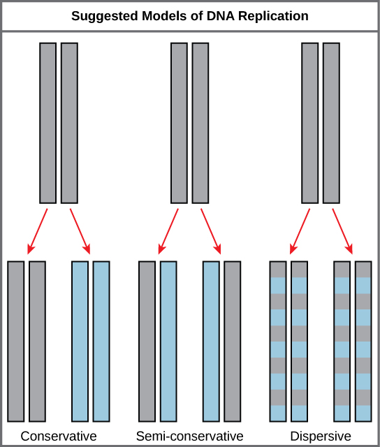
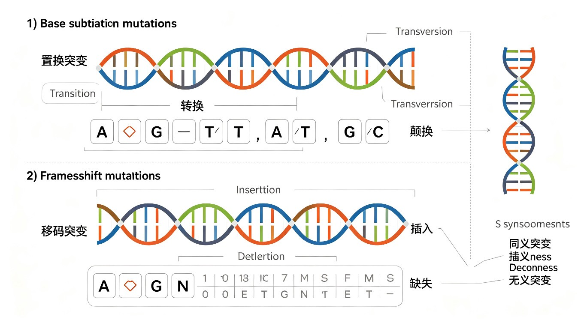
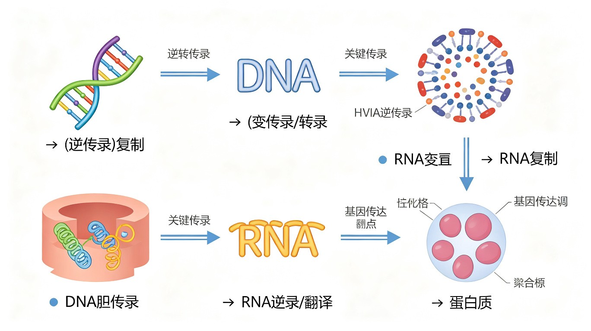

分子遗传学基础
一、DNA双螺旋结构详解
DNA双螺旋结构由Watson和Crick于1953年提出（获1962年诺贝尔奖），基于Rosalind Franklin的X射线衍射数据和Chargaff的碱基组成规则。
B型DNA的主要特征：
- 两条反平行多核苷酸链（5'→3'和3'→5'）右手螺旋缠绕
- 糖-磷酸骨架在外侧，碱基在内侧，碱基平面垂直于螺旋轴
- 大沟（Major Groove，宽2.2nm）和小沟（Minor Groove，宽1.2nm）——蛋白质（转录因子等）主要在大沟中识别碱基序列（大沟暴露出更多碱基特异的氢键供体/受体和甲基）
- 碱基配对：A=T（2个氢键），G≡C（3个氢键）。GC含量越高，DNA热稳定性越高（Tm值越高）
- 螺旋参数：螺距3.4nm（10bp），直径2.0nm，相邻碱基间距0.34nm，旋转角度36°/bp
DNA的其他构象：A型DNA（右手螺旋，低湿度，RNA-DNA杂交双链和RNA双链为此型，11bp/圈）、Z型DNA（左手螺旋，嘌呤-嘧啶交替序列，如GCGCGC，12bp/圈，在转录活跃区域可能有调控功能）。
二、DNA复制
DNA复制是半保留复制（Semiconservative Replication）——每条子代DNA分子含一条亲代链和一条新生链。由Meselson和Stahl于1958年用¹⁵N同位素标记+CsCl密度梯度离心实验证明（"生物学中最美的实验"）。
复制叉的酶学：
- 解旋酶（Helicase/DnaB）：利用ATP水解能量解开DNA双链。六聚体环状结构，环绕单链DNA前进。
- 单链DNA结合蛋白（SSB）：稳定解开的单链DNA，防止重新退火和被核酸酶降解。
- 拓扑异构酶（Topoisomerase）：解除解旋引起的超螺旋张力。Topo I（单链断裂，不耗ATP）和Topo II（DNA旋转酶gyrase，双链断裂，消耗ATP，引入负超螺旋）。
- 引物酶（Primase/DnaG）：合成短RNA引物（~10nt），提供DNA聚合酶所需的3'-OH末端。
- DNA聚合酶III全酶（Pol III Holoenzyme）：原核生物的主要复制酶。核心酶（αεθ）+滑动钳（β₂，环状蛋白）+钳装载器（γ/τ复合体，消耗ATP）。高持续性（~500kb不停顿）。3'→5'外切酶校对活性（ε亚基）。
前导链与后随链：由于DNA双链反平行且DNA聚合酶只能沿5'→3'方向合成，复制叉处两条链的合成方式不同：
- 前导链（Leading Strand）：模板链方向3'→5'，合成方向5'→3'，连续合成。只需一个引物。
- 后随链（Lagging Strand）：模板链方向5'→3'，合成方向5'→3'，不连续合成。需要多个引物，形成冈崎片段（Okazaki Fragment）（原核~1000-2000nt，真核~100-200nt）。
端粒与端粒酶：
- 真核线性染色体末端的复制问题：后随链5'末端RNA引物去除后无法填补（末端复制问题，end-replication problem）→染色体逐渐缩短。
- 端粒酶（Telomerase）：核糖核蛋白（RNP）复合体，含hTERT（端粒酶逆转录酶，催化亚基）和hTR（端粒酶RNA，含模板序列CCCUAA）。以自身RNA为模板，在染色体3'端添加TTAGGG重复序列（人类）。
- Hayflick极限：正常体细胞分裂次数有限（~50-70次），因端粒逐渐缩短。端粒酶在大多数体细胞中不表达，但在生殖细胞、干细胞和~85-90%的癌细胞中高表达。

三、基因突变
基因突变（Gene Mutation）是DNA碱基序列的可遗传改变。根据突变对蛋白质编码的影响分类：
- 点突变（Point Mutation）：单个碱基的改变。
- 沉默突变（Silent/Synonymous）：密码子改变但氨基酸不变（同义突变）。
- 错义突变（Missense）：密码子改变→氨基酸改变。保守性错义突变（相似氨基酸）→可能功能影响小；非保守性错义突变→功能影响大。如镰刀型细胞贫血症（HbS）：GAG(Glu)→GTG(Val)，β链第6位。
- 无义突变（Nonsense）：密码子变为终止密码子（UAA/UAG/UGA）→翻译提前终止→截短蛋白。常导致功能丧失。
- 移码突变（Frameshift Mutation）：插入或缺失1-2个碱基（非3的倍数）→阅读框改变→下游氨基酸序列完全改变→通常产生无功能蛋白。
- 动态突变（Dynamic Mutation）：三核苷酸重复序列的异常扩增。如亨廷顿舞蹈症（CAG重复，Htt基因）、脆性X综合征（CGG重复，FMR1基因）。
突变的基本单位（竞赛补充）：
- 位点（locus）：遗传学上指基因在染色体上的位置，即一个基因在染色体上的占位。
- 座位（site）：突变的最小单位，指基因内部能发生突变的最小结构单位，相当于一个碱基对。
碱基置换突变——转换与颠换（竞赛高频考点）：
- 转换（Transition）：嘌呤替换嘌呤（A↔G），或嘧啶替换嘧啶（C↔T/U）。即同类碱基之间的替换。转换是最常见的点突变类型。
- 颠换（Transversion）：嘌呤替换嘧啶（或嘧啶替换嘌呤），即A↔C, A↔T, G↔C, G↔T。颠换比转换少见。
移码突变（Frameshift Mutation）：
- 插入突变（Insertion）：DNA序列中增加一个或多个碱基对。
- 缺失突变（Deletion）：DNA序列中丢失一个或多个碱基对。
- 当插入或缺失的碱基数不是3的倍数时，会导致阅读框改变，突变点下游所有密码子均改变，通常产生完全无功能的蛋白质。
按遗传信息改变的突变分类（竞赛补充）：
- 同义突变（Synonymous/Silent Mutation）：碱基改变后编码的氨基酸不变。由于密码子的简并性（多个密码子编码同一氨基酸），第三位碱基的改变常为同义突变。
- 错义突变（Missense Mutation）：碱基改变后编码的氨基酸发生改变。如镰刀型细胞贫血症HbS：GAG(Glu)→GTG(Val)。
- 无义突变（Nonsense Mutation）：碱基改变后使原本编码氨基酸的密码子变为终止密码子，导致肽链合成提前终止，产生截短蛋白。
无义突变的三种类型（竞赛高频考点）——根据产生的终止密码子分类：
- 琥珀型（Amber, UAG）：突变产生UAG终止密码子。以琥珀色命名。
- 赭石型（Ochre, UAA）：突变产生UAA终止密码子。UAA是最常用的终止密码子。
- 乳石型/蛋白石型（Opal/Umbra, UGA）：突变产生UGA终止密码子。又称乳白型。
无义突变 suppression（抑制）：某些tRNA突变（抑制型tRNA，suppressor tRNA）可以识别终止密码子并插入氨基酸，从而"抑制"无义突变，使翻译继续。如琥珀型抑制基因（supE/supF）携带突变的谷氨酰胺tRNA，可识别UAG并插入Gln。

中心法则（Central Dogma）——遗传信息流动的基本规律：
中心法则描述了遗传信息在生物大分子间的流动方向：DNA→RNA→蛋白质。DNA通过复制传递遗传信息，通过转录将信息传递给RNA，再通过翻译将信息转化为蛋白质。此外，逆转录病毒（如HIV）可以通过逆转录酶将RNA→DNA，RNA病毒可以通过RNA复制传递信息。

四、DNA修复机制
DNA修复系统保护基因组完整性。主要修复途径：
- 直接修复（Direct Repair）：光修复酶（photolyase）利用可见光能量修复UV诱导的嘧啶二聚体（环丁烷嘧啶二聚体，CPD）。O⁶-甲基鸟嘌呤-DNA甲基转移酶（MGMT）直接去除烷基化损伤。
- 碱基切除修复（BER）：修复受损碱基（氧化、脱氨基、烷基化）。DNA糖苷酶识别并切除受损碱基→AP内切酶切割AP位点→DNA Pol β填补→连接酶封口。
- 核苷酸切除修复（NER）：修复体积较大的加合物（如UV诱导的嘧啶二聚体、苯并[a]芘-DNA加合物）。切除~24-32nt的寡核苷酸片段，DNA Pol δ/ε填补。XP（着色性干皮病）患者NER缺陷→对UV极度敏感→皮肤癌高发。
- 错配修复（MMR）：修复复制错误（错配碱基和插入/缺失环）。MutS识别错配→MutL→MutH在未甲基化链上切口→外切酶切除→Pol III填补。原核中通过Dam甲基化区分母链和新链。
- 双链断裂修复：同源重组（HR）（利用同源序列作为模板，精确修复，S/G2期）和非同源末端连接（NHEJ）（直接连接断裂末端，易出错，G1期）。
- SOS修复：DNA严重损伤时诱导的易错修复系统。RecA蛋白激活，Pol V（UmuD'₂C）进行跨损伤合成（TLS，translesion synthesis）。
DNA修复的四种基本机制（竞赛补充）——竞赛教材中的经典分类：
1. 光修复（Photoreactivation / 光复活修复）
- 机制：光修复酶（photolyase/光裂合酶）在可见光（300~600nm）照射下被激活，直接识别并切割紫外线诱导的嘧啶二聚体（环丁烷嘧啶二聚体，CPD），恢复原来的碱基结构。
- 特点：直接修复，不需要切除碱基；依赖光（可见光）；原核生物和部分真核生物中存在，但胎盘类哺乳动物中无光修复酶。
2. 暗修复（Dark Repair / 切除修复，Excision Repair）
- 机制：不需要光，通过切除损伤片段并重新合成来修复。包括碱基切除修复（BER）和核苷酸切除修复（NER）。
- 过程（NER为例）：①特异性内切酶识别损伤部位→②在损伤两侧切割DNA链→③DNA聚合酶以互补链为模板填补缺口→④DNA连接酶封口。
- 特点：最常见的修复方式；人类着色性干皮病（XP）患者NER缺陷→对紫外线极度敏感→皮肤癌高发。
3. 重组修复（Recombination Repair / 复制后修复）
- 机制：当DNA损伤未修复就开始复制时，新合成的链在损伤处留下缺口。通过同源重组，从另一条完整的姐妹染色单体上取下相应片段填补缺口。
- 特点：复制后修复；不消除原始损伤，但可保证子代DNA完整性；原始损伤在后续复制中逐渐稀释。
4. SOS修复（SOS Repair / 诱导修复）
- 机制：当DNA受到严重损伤时，细胞启动应急修复系统。RecA蛋白被激活→诱导产生多种修复酶（包括DNA聚合酶V/Pol V）→进行跨损伤合成（TLS）。
- 特点：易错修复（error-prone）——Pol V可越过损伤部位继续合成，但保真性低，常引入突变；是最后手段；修复后细胞可存活但可能积累突变。
紫外线损伤与胸腺嘧啶二聚体（竞赛补充）——DNA损伤的经典模型：
- 紫外线（UV），特别是UV-C（260nm）和UV-B（280~315nm），可被DNA碱基吸收，导致相邻嘧啶碱基之间形成共价键。
- 胸腺嘧啶二聚体（Thymine Dimer）：相邻两个胸腺嘧啶（T-T）通过环丁烷环连接形成二聚体，是紫外线损伤最主要的形式。也可形成T-C或C-C二聚体。
- 危害：嘧啶二聚体扭曲DNA双螺旋结构，阻断DNA复制和转录，导致细胞死亡或突变。
- 修复：①光修复（光复活酶直接切割）；②暗修复（切除修复，NER）；③重组修复（复制后）。
- 相关疾病：着色性干皮病（XP）——NER缺陷→无法修复UV损伤→皮肤癌高发。
转录（Transcription）与翻译（Translation）（竞赛补充）——中心法则的核心过程：
- 转录：以DNA为模板，在RNA聚合酶催化下合成RNA的过程。原核生物只有一种RNA聚合酶；真核生物有三种（Pol I→rRNA, Pol II→mRNA, Pol III→tRNA/5S rRNA）。转录方向为5'→3'。
- 翻译：以mRNA为模板，在核糖体上合成蛋白质的过程。tRNA携带氨基酸通过反密码子识别mRNA上的密码子。翻译包括起始、延长、终止三个阶段。


五、本节核心总结
六、转座子与基因组结构
转座子（Transposable Elements, TEs）是基因组中可移动的DNA序列，由Barbara McClintock于1940年代在玉米中发现（获1983年诺贝尔奖）。
- DNA转座子（Class II）：通过"剪切-粘贴"机制转座。转座酶（transposase）识别末端反向重复序列（TIR）→切除转座子→插入新位点。如玉米Ac/Ds系统：Ac（Activator）编码自主转座酶，Ds（Dissociation）为缺失转座酶的非自主元件，需Ac提供转座酶才能移动。
- 逆转座子（Class I/Retrotransposons）：通过"复制-粘贴"机制（RNA中间体）转座。①LTR逆转座子（如Ty1/copia、Ty3/gypsy）：含长末端重复序列，编码逆转录酶和整合酶；②非LTR逆转座子：LINE（长散布核元件，L1编码ORF1和ORF2，ORF2含内切酶和逆转录酶活性）和SINE（短散布核元件，如Alu，依赖LINE的酶进行转座）。
人类基因组中~45%由转座子衍生序列组成，大多数已失活。
基因组结构：
- C值矛盾（C-value Paradox）：基因组大小（C值）与生物复杂性不相关。如某些肺鱼的基因组（~130Gb）远大于人类（~3.2Gb）。
- G值矛盾（G-value Paradox）：基因数量与生物复杂性不完全相关。人类~20,000个蛋白编码基因，与线虫（~20,000）相似，远少于许多植物。
- 人类基因组组成：~1.5%编码蛋白质的外显子，~45%转座子衍生序列，内含子、调控序列、假基因等。
七、基因组学与DNA测序技术
DNA测序技术的发展：
- Sanger测序（第一代）：双脱氧核苷酸（ddNTP）链终止法。Frederick Sanger 1977年发明（获1980年诺贝尔奖，第二次）。读长~800bp，准确率~99.999%。人类基因组计划（HGP, 1990-2003）主要使用Sanger法。
- NGS（第二代测序）：Illumina（边合成边测序/SBS，可逆终止子，读长~150-300bp，通量最高）；Ion Torrent（检测H⁺释放，半导体测序）；SOLiD（连接测序）。NGS使测序成本大幅降低→"1000美元基因组"时代。
- 第三代测序：PacBio（SMRT单分子实时测序，读长~10-30kb，环状一致性测序CCS→高准确率）；Oxford Nanopore（纳米孔测序，读长可达>100kb，直接检测DNA/RNA分子通过纳米孔时的电流变化）。优势：长读长→可跨越重复序列和结构变异。
人类基因组计划的成果：
- 人类基因组~3.2Gb，~20,000个蛋白编码基因（远少于预期的~100,000）。仅~1.5%编码蛋白质，大量非编码序列（转座子、内含子、调控序列等）。
- ENCODE计划（Encyclopedia of DNA Elements）：发现基因组中~80%的序列具有生化功能（转录、转录因子结合、染色质修饰等），挑战了"垃圾DNA"的概念。
- 千人基因组计划（1000 Genomes Project）：绘制人类遗传变异的详细图谱——每个个体携带~3-5百万个SNP和数百个结构变异。
基因组编辑技术：CRISPR-Cas9之外，还包括ZFN（锌指核酸酶）、TALEN（转录激活因子样效应物核酸酶）。碱基编辑器（Base Editor）→胞嘧啶碱基编辑器（CBE）和腺嘌呤碱基编辑器（ABE）→实现单碱基精确编辑（无需双链断裂）。先导编辑（Prime Editing）→"搜索和替换"基因组编辑，可实现所有12种碱基替换和小片段插入/缺失。
八、DNA损伤应答与基因组不稳定性
DNA损伤应答（DDR, DNA Damage Response）：细胞感知DNA损伤并协调修复、细胞周期停滞和凋亡的信号网络。
- ATM（Ataxia Telangiectasia Mutated）：DNA双链断裂的传感器。ATM被MRN复合体（MRE11-RAD50-NBS1）招募到DSB位点→自磷酸化激活→磷酸化下游靶标（Chk2/p53/H2AX等）。ATM缺乏→共济失调毛细血管扩张症（AT）→小脑退化（共济失调）+免疫缺陷+癌症易感性+放射敏感性。
- ATR（ATM and Rad3-Related）：单链DNA/复制应激的传感器。ATRIP-ATR复合体被RPA包被的ssDNA招募→激活→磷酸化Chk1→细胞周期停滞。
- DNA-PKcs：NHEJ（非同源末端连接）的关键激酶。与Ku70/Ku80异二聚体共同识别DNA末端→DNA-PKcs自磷酸化→招募Artemis核酸酶加工末端→连接酶IV/XRCC4/XLF复合体连接。
- γ-H2AX：ATM/ATR/DNA-PKcs磷酸化H2AX（Ser139）→γ-H2AX→DSB位点的标志。γ-H2AX免疫荧光焦点是检测DSB的标准方法。
基因组不稳定性与癌症：
- 染色体不稳定性（CIN）→大多数实体瘤的特征。微卫星不稳定性（MSI）→MMR缺陷（如Lynch综合征/HNPCC）→结直肠癌等。
- PARP抑制剂：PARP（聚ADP-核糖聚合酶）参与BER/SSB修复。PARP抑制剂（奥拉帕尼Olaparib等）→SSB积累→复制叉崩塌→DSB→BRCA突变细胞（HR缺陷）无法修复→合成致死（synthetic lethality）。BRCA1/2突变乳腺癌/卵巢癌的靶向治疗。
九、表观遗传修饰与DNA甲基化测序
DNA甲基化的检测技术：
- 亚硫酸氢盐测序（Bisulfite Sequencing, BS-seq）：亚硫酸氢钠处理DNA→未甲基化C→U（测序读作T），甲基化C（5mC）→不受影响→仍为C。PCR扩增后测序→比较处理前后序列→确定甲基化位点。WGBS（全基因组亚硫酸氢盐测序）是DNA甲基化分析的金标准。
- 甲基化特异性PCR（MSP）：设计针对甲基化和未甲基化DNA的特异性引物→PCR扩增→判断甲基化状态。简便快速，适合临床检测。
- MeDIP-seq（甲基化DNA免疫沉淀测序）：5mC抗体富集甲基化DNA片段→测序。分辨率低于BS-seq，但成本较低。
- 第三代测序直接检测甲基化：PacBio SMRT测序→通过聚合酶动力学（IPD, interpulse duration）检测碱基修饰（包括5mC和5hmC）。Nanopore测序→通过电流信号特征直接区分修饰碱基。
ChIP-seq与转录因子结合位点鉴定：
- ChIP-seq（染色质免疫沉淀测序）：甲醛交联→超声打断染色质→特异性抗体富集（转录因子或组蛋白修饰）→解交联→DNA纯化→测序→peak calling→鉴定全基因组结合位点。ChIP-seq是研究转录因子结合和组蛋白修饰的标准方法。
- CUT&RUN/CUT&Tag：新一代技术，无需交联和超声，在完整细胞/核中进行→抗体引导MNase（CUT&RUN）或Tn5转座酶（CUT&Tag）切割靶位点→更低的背景和更高的灵敏度。
十、DNA损伤应答与基因组不稳定性
DNA损伤应答（DDR, DNA Damage Response）：
- ATM/ATR信号通路：ATM（Ataxia Telangiectasia Mutated）→被DSB（双链断裂）激活→磷酸化CHK2→磷酸化p53→p53稳定化→转录激活p21→CDK抑制→细胞周期阻滞（G1/S检查点）。ATR→被单链DNA/RPA复合物激活→磷酸化CHK1→CDC25磷酸化降解→CDK抑制→S/G2检查点阻滞。ATM突变→共济失调毛细血管扩张症（AT）→小脑萎缩、免疫缺陷、放射敏感性增高、癌症风险增加。
- p53——基因组守护者：p53是DDR的核心转录因子（TP53基因，17p13.1）。低水平DNA损伤→p53→p21→细胞周期阻滞→DNA修复。高水平/不可修复损伤→p53→BAX/PUMA/NOXA→凋亡。TP53是人类癌症中最常见的突变基因（>50%人类癌症有TP53突变）。Li-Fraumeni综合征→TP53胚系突变→多发性早发性癌症（肉瘤、乳腺癌、脑瘤、白血病）。
- PARP抑制剂与合成致死：PARP（聚ADP-核糖聚合酶）→识别SSB（单链断裂）→合成PAR链→招募修复蛋白。PARP抑制剂（奥拉帕利/Olaparib）→SSB积累→复制叉塌陷→DSB。BRCA1/2突变细胞→HR修复缺陷→DSB修复依赖NHEJ→基因组不稳定性→细胞死亡。BRCA突变+PARP抑制剂→合成致死（synthetic lethality）→精准靶向BRCA突变肿瘤（乳腺癌、卵巢癌）。
基因组学技术与DNA测序：
- Sanger测序（第一代测序）：双脱氧链终止法（ddNTP，缺少3'-OH→链终止）→四色荧光标记→毛细管电泳→读长800-1000bp→准确率>99.9%。人类基因组计划（HGP）主要使用Sanger测序。Frederick Sanger→两次诺贝尔化学奖（1958年蛋白质测序，1980年DNA测序）。
- NGS（第二代测序）：Illumina（Solexa）→桥式PCR扩增→边合成边测序（SBS）→可逆终止子+荧光标记→每次循环读取一个碱基→读长150-300bp→高通量（每次运行可产生数百Gb数据）。应用：全基因组测序（WGS）、全外显子测序（WES）、RNA-seq。
- 第三代测序：PacBio SMRT（单分子实时测序）→零模波导（ZMW）→DNA聚合酶固定→荧光标记dNTP掺入→实时检测→读长10-30kb（最长>100kb）→可检测碱基修饰。Nanopore（牛津纳米孔）→DNA/RNA通过纳米孔→电流变化→实时碱基识别→读长可达Mb级别→便携设备（MinION）。
- Hi-C（染色质构象捕获）：甲醛交联→限制酶切→生物素标记→连接→测序→全基因组染色质三维互作图谱→鉴定TAD（拓扑关联结构域）、A/B compartment（开放/封闭染色质区域）、增强子-启动子互作环。
十一、转座子与基因组可塑性
转座子（Transposable Elements, TEs）：
- 转座子的分类：I类（反转录转座子/retrotransposon）→RNA中间体→"复制-粘贴"机制。LTR反转录转座子（如人类ERV，内源性逆转录病毒，占基因组~8%）和非LTR反转录转座子（LINE-1，占基因组~17%；SINE，如Alu元件，占基因组~11%）。II类（DNA转座子）→"剪切-粘贴"机制→转座酶识别末端反向重复（TIR）→切出→插入新位点。人类基因组中II类转座子大多已失活（占~3%）。
- 转座的遗传效应：插入突变→基因失活（如血友病A→LINE-1插入F8基因）；外显子重排→新基因形成；同源重组→染色体缺失/重复/倒位；改变基因表达调控→转座子携带启动子/增强子/绝缘子序列。
- 转座子的进化意义：Barbara McClintock→1940年代发现转座子（"跳跃基因"）→1983年诺贝尔奖。转座子贡献了~45%的人类基因组。转座子可被驯化→RAG1/RAG2（V(D)J重组酶）→由转座酶进化而来；合胞素（syncytin）→ERV env基因驯化→胎盘形成。
- 宿主防御转座子机制：DNA甲基化→转座子沉默；piRNA（piwi-interacting RNA）→PIWI蛋白复合体→转录后沉默转座子（生殖细胞中）；KRAB-ZFP→招募KAP1→组蛋白修饰→表观遗传沉默。转座子与宿主的"军备竞赛"驱动基因组进化。
端粒与端粒酶的奥赛深度：
- 端粒结构：人类端粒重复序列(TTAGGG)n→3'端突出的G-rich悬垂（G-overhang）→形成T-loop（端粒环，D-loop结构）→保护染色体末端不被识别为DSB。Shelterin复合体（TRF1, TRF2, POT1, TIN2, TPP1, RAP1）→特异性结合端粒DNA→防止DNA损伤应答（ATM/ATR）激活和NHEJ/HR修复。
- 端粒酶（Telomerase）：核糖核蛋白复合体→hTERT（人端粒酶逆转录酶，催化亚基）+ hTR/hTERC（端粒酶RNA模板，含CUAACCCUAAC序列与TTAGGG互补）。端粒酶以自身RNA为模板→在3'端添加TTAGGG重复→端粒延伸。端粒酶在大多数体细胞中不表达→端粒随每次分裂缩短→Hayflick极限（~50-70次分裂）→复制性衰老。端粒酶在>85%人类癌症中被重新激活→肿瘤细胞永生化。
- 端粒相关疾病：先天性角化不良（Dyskeratosis Congenita, DC）→DKC1（dyskerin，hTR稳定性所需）或hTERT/hTR突变→端粒维持缺陷→骨髓衰竭、皮肤色素沉着、指甲营养不良、口腔白斑。特发性肺纤维化（IPF）→端粒酶基因突变→肺泡上皮干细胞耗竭。
必背考点汇总
- DNA双螺旋：B-DNA，大沟/小沟，A=T(2H)/G≡C(3H)，Chargaff规则
- 半保留复制：Meselson-Stahl实验（¹⁵N→¹⁴N）
- 复制叉酶：解旋酶/SSB/拓扑异构酶/引物酶/Pol III/Pol I/连接酶
- 端粒酶：hTERT+hTR，TTAGGG，Hayflick极限，癌细胞中高表达
- 突变类型：沉默/错义/无义/移码/动态突变
- DNA修复：BER/NER(XP)/MMR/HR/NHEJ/SOS修复
- Ames试验：检测致突变性
高中教材衔接 · 课标对应
人教版必修2第3章"基因的本质"——DNA 是遗传物质、DNA 双螺旋结构、DNA 半保留复制、基因的概念；人教版选择性必修2——基因工程（限制酶+连接酶+载体+受体细胞）。具体到小节：必修2第3章第1节"DNA 是主要的遗传物质"——Avery 的 DNA 转化、Hershey-Chase 的 ³²P/³⁵S 噬菌体实验；第3章第2节"DNA 分子的结构"——双螺旋、碱基互补；第3章第3节"DNA 的复制"——半保留复制；选择性必修2——限制酶（EcoRI、HindIII）、DNA 连接酶、质粒载体、PCR 技术。
2025 / 2026 联赛 · 初赛真题链接
本章重难点深度解析
重难点 1：DNA 复制的精细分子机制（原核 vs 真核）
- 原核复制起点的组装：大肠杆菌 oriC ~245 bp，含 4 个 9-mer 重复序列（DnaA 结合位点，TTATCCACA）+ 3 个 13-mer 重复序列（AT 富集区，DNA 解链起点）。① 起始：DnaA-ATP 结合 9-mer → DnaA 寡聚化 → 拉伸 13-mer AT → DNA 解链 → 装载 DnaB-DnaC 复合物（hexameric helicase）→ SSB 稳定单链；② HU 蛋白结合弯曲 DNA；③ DNA 旋转酶（gyrase）消除复制叉前方正超螺旋。
- 原核 DNA Pol III 全酶：真核 Pol δ 的同源体，但结构更复杂。① α 亚基（聚合酶活性，5'→3'）；② ε 亚基（3'→5' 外切校正活性）；③ θ 亚基（稳定 ε）；④ β 滑动夹（dimeric ring，绕过 DNA 链，每秒 ~1000 nt 持续合成）；⑤ γ 复合物（夹子装载器，δδ'γγψχ，ATP 依赖性打开 β 夹子并装到 DNA 上）；⑥ 2 个 αεθ 核心酶 + 2 个 β 夹（leading 和 lagging 各自一个）；⑦ τ 亚基二聚化两个核心酶 → 形成复制体（replisome）。
- lagging strand 合成的"环状"机制：lagging strand 的 DNA Pol III 不连续合成 Okazaki 片段（~1000-2000 bp，原核；~200 bp，真核）。关键机制：① Pol III 一直结合在同一复制叉（"trombone model"）；② 当一个 Okazaki 片段合成完毕，Pol III 通过 β 夹释放，从新引物（由 DnaG 引物酶合成）重新开始；③ lagging strand 模板形成"环"（loop），使 Pol III 在物理上与 leading strand 的 Pol III 同步移动。
- 真核 vs 原核复制的差异：① 多起点：真核每个染色体有多个复制子（人基因组 ~30,000 个起点），每个 ~30-300 kb，原核单一 oriC；② 复制速度：真核 ~50 bp/s，原核 ~1000 bp/s；③ Pol 类型：真核 Pol α（引物合成，~280 kDa，4 亚基，含 primase）/ Pol δ（lagging strand）/ Pol ε（leading strand）；④ 端粒酶：真核线性染色体末端需要 TERT 解决末端复制问题；⑤ 染色质：真核复制需同时解开核小体（CAF-1 + PCNA + ASF1 介导组蛋白回填）；⑥ 检查点：真核有多个检查点（intra-S、replication fork stall、post-replication）。
重难点 2：DNA 损伤修复的多重机制
- 直接修复（direct reversal）：① 光复活（photoreactivation）—— 光复活酶（photolyase）结合嘧啶二聚体（环丁烷嘧啶二聚体 CPD 或 6-4 光产物），用吸收的蓝光（300-500 nm）能量断裂环丁烷键，恢复单体；存在于细菌、植物、低等脊椎动物，哺乳动物没有（依赖 NER）；② O⁶-甲基鸟嘌呤-DNA 甲基转移酶（MGMT，O⁶-alkylguanine DNA alkyltransferase）—— 将 O⁶-甲基鸟嘌呤（O⁶-MeG）的甲基直接转移到酶自身的 Cys 残基上（"自杀性"酶，一次性作用）。MGMT 在脑肿瘤对烷化剂（替莫唑胺、BCNU）耐药中起关键作用。
- 碱基切除修复（BER, base excision repair）：① DNA 糖基化酶（DNA glycosylase）识别并切除损伤碱基，留下 AP 位点（无嘌呤/无嘧啶位点）：UNG（尿嘧啶-DNA 糖基化酶，切除 U—— U 是 C 脱氨产物，必须从 DNA 中移除以避免突变）、TDG（切除 T:G 错配，5mC 脱氨产物）、MYH（MutY homolog，切除 A:8-oxoG 错配中错配的 A）、NTH1（切除氧化嘧啶如 thymine glycol）；② AP 内切核酸酶（APE1）切开 AP 位点 5' 端；③ DNA Pol β 填补（一个核苷酸短修补 BER）或 Pol β/λ + FEN1（长修补 BER，~2-10 nt）；④ DNA ligase III + XRCC1 连接。
- 核苷酸切除修复（NER, nucleotide excision repair）：① 识别损伤——全局基因组 NER（GG-NER）：XPC-RAD23B 复合物识别扭曲的 DNA；转录偶联 NER（TC-NER）：CSA、CSB 识别停滞的 RNA Pol II；② TFIIH 解旋酶（XPB 3'→5'、XPD 5'→3'，二者方向相反）在损伤两侧打开 DNA ~20-30 nt；③ XPA-RPA 验证损伤；④ XPF-ERCC1 在 5' 端切割、XPG 在 3' 端切割，移除 ~24-32 nt 寡核苷酸；⑤ Pol δ/ε 合成填补，DNA ligase I/XRCC1 连接。NER 缺陷导致着色性干皮病（XP, xeroderma pigmentosum，对 UV 高度敏感，皮肤癌高发）、Cockayne 综合征（TC-NER 缺陷，发育迟缓、早衰）。
- 错配修复（MMR, mismatch repair）：原核 MutS-MutL-MutH 系统识别错配（如 G-T 错配、插入缺失环）。MutH 识别 dam 甲基化（GATC 中 A 甲基化，子链刚合成未甲基化→切除子链），ExoI/ExoVII/RecJ 切除包含错配的子链片段（~100-1000 nt），Pol III 重新合成，Ligase 连接。MMR 缺陷：① 人类 MLH1、MSH2、MSH6、PMS2 等基因突变导致 Lynch 综合征（HNPCC，遗传性非息肉性结直肠癌），微卫星不稳定性（MSI）显著。② 体细胞 MMR 缺陷与多种肿瘤的 5-FU/顺铂耐药相关。
重难点 3：双链断裂（DSB）修复——HR 和 NHEJ
- HR（同源重组修复，homologous recombination）：发生在 S/G2 期（需要姐妹染色单体作模板）。① MRN（MRE11-RAD50-NBS1）识别 DSB 并初步处理；② BRCA1 招募 BRCA2-PALB2；③ BRCA2 装载 RAD51（人）或 Dmc1（生殖细胞特异）到 3' 单链 overhang；④ Rad51 形成核蛋白丝，介导链侵入同源 dsDNA → 形成 D-loop；⑤ DNA 聚合酶延伸 3' 端，捕获第二末端 → dHJ（double Holliday junction）；⑥ 解离酶（GEN1、Mus81-Eme1）切割 HJ → 交叉或非交叉产物。HR 缺陷：① BRCA1/2 突变 → 遗传性乳腺癌/卵巢癌（HBOC）；② Bloom syndrome（BLM 解旋酶突变）→ 早衰、肿瘤易感；③ Fanconi 贫血（FA 通路，FANCA/B/C 等）→ 骨髓衰竭、白血病、肿瘤易感。
- NHEJ（非同源末端连接，non-homologous end joining）：发生在 G1 期（无姐妹染色单体）或全期。① Ku70/Ku80 异二聚体识别 DSB 末端并保护；② DNA-PKcs（DNA 依赖性蛋白激酶催化亚基）被招募并激活；③ 末端加工酶（Artemis、PNK、Pol μ/λ）修剪或填充末端；④ XRCC4-DNA ligase IV-XLF（Cernunnos）复合物连接两个末端。NHEJ 是免疫系统 V(D)J 重组的基础（RAG1/RAG2 + Artemis + DNA-PKcs）。NHEJ 缺陷：① SCID（重症联合免疫缺陷病）—— 由于 V(D)J 失败；② 神经退行性（共济失调微血管扩张样表型）。
- SOSS 与 SOS 修复：SOS 修复（应急修复）是细菌对大量 DNA 损伤的应急反应。① RecA 被单链 DNA 激活（RecA*）；② RecA* 介导 LexA 自水解（解除 LexA 对 SOS 基因的抑制）；③ SOS 基因包括 uvrABC（NER）、recA、umuDC、sulA、dinB（Pol IV）等；④ UmuD'C + RecA 形成"易错修复"复合物（DNA Pol V），能在损伤位点无模板合成（dNTP 随机插入）→ 突变率高但 DNA 链不被阻断。SOS 修复是细菌耐药和适应性突变的重要机制。
重难点 4：基因突变的分子类型与人类疾病
- 点突变的精细分类：① 碱基置换（base substitution）—— 转换（transition）：嘌呤↔嘌呤（A↔G）或嘧啶↔嘧啶（C↔T），共 4 种；颠换（transversion）：嘌呤↔嘧啶（A↔C、A↔T、G↔C、G↔T），共 8 种。转换概率约为颠换的 2 倍（自然突变中）；② 同义突变（synonymous）—— 碱基置换不改变氨基酸（同义密码子）；③ 错义突变（missense）—— 改变氨基酸（如 HbS：HBB Glu6Val，GAG→GTG）；④ 无义突变（nonsense）—— 产生终止密码（UAA/UAG/UGA），使蛋白截短；⑤ 终止密码突变（stop-loss）—— 终止密码被改变，蛋白延长（mRNA 不稳定，NMD 介导降解）。
- 移码突变（frameshift mutation）：插入或缺失 1-2 bp（不是 3 的倍数）→ 后续所有密码子读框改变 → 蛋白结构完全改变。3 bp 的插入/缺失（in-frame）→ 插入/缺失 1 个氨基酸，影响较小。例子：① Tay-Sachs 病——HEXA 基因 4 bp 插入（最常见突变，种族特异性）；② DMD —— 多个外显子缺失（约 65% DMD 患者）；③ 囊性纤维化 —— ΔF508（3 bp 缺失，丢失 Phe508）。
- 动态突变（dynamic mutation）：三核苷酸重复序列在世代间不稳定扩增，导致疾病"早现"（anticipation，发病年龄逐代提前、症状加重）。① CAG 重复（编码 polyGln）—— 亨廷顿病（≥40 次发病）、脊髓小脑共济失调 SCA1-7、DRPLA、脊髓延髓肌萎缩 SBMA；② CGG 重复 —— 脆 X 综合征（FMR1 基因 5'UTR，>200 重复 → 启动子甲基化 → FMRP 缺失）；③ CTG 重复 —— 强直性肌营养不良 DM1（DMPK 3'UTR，>50 重复）；④ GAA 重复 —— Friedreich 共济失调（frataxin 内含子，>66 重复）；⑤ 扩增机制 —— 复制滑移（replication slippage）、重组、错配修复失败。
- 基因突变的修复与"突变负担"：① 每个细胞每天受到约 10⁴-10⁵ 次 DNA 损伤；② 大多数损伤被 BER/NER/MMR/HR/NHEJ 修复；③ 修复失败的损伤 → 突变或细胞死亡/衰老；④ DNA 损伤累积是衰老和癌症的核心机制；⑤ 突变率（mutation rate）—— 每代每基因 ~10⁻⁶，每代每 bp ~10⁻⁹-10⁻¹⁰；⑥ 致突变剂（mutagens）—— 物理（UV、电离辐射）、化学（烷化剂、亚硝酸、芳香烃、AFB1、TCDD）、生物（病毒整合、细菌毒素）；⑦ Ames 试验 —— 用沙门氏菌 his⁻ 突变体检测致突变性。